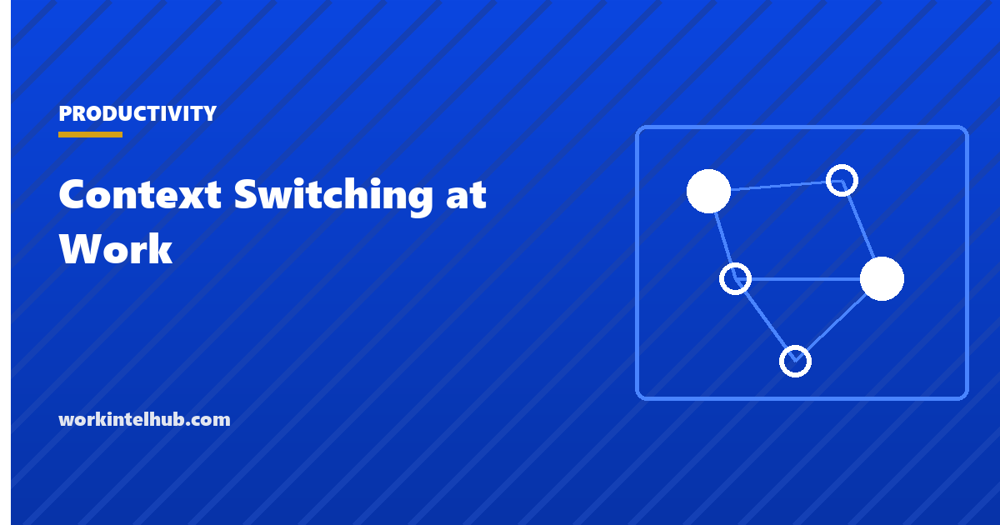

Context Switching at Work

Context switching is moving attention from one task to another and back: from the analysis to the chat message to the analysis, from the document to the meeting to the document. Each switch costs something, in the seconds it takes the mind to reload the task and in the longer period before the previous depth of engagement returns. The term comes from computing, where a processor switching between programs must save and restore their state, and the analogy is apt: the switch itself is quick, and the overhead is in everything around it.
The calculator below estimates the cost from your own switch count. The rest of the page covers what the research actually found, including the two figures everyone quotes and what they do and do not say, why switching has increased, and the changes that reduce it for a person and for a team.
Context switching cost calculator
Direct switch cost is seconds; the loss comes from re-orientation and from the detours before returning. Five is conservative for knowledge work; use two for routine tasks.
An estimate built from your own inputs, not a measurement. Count switches for one real day before trusting the number; most people undercount by half.
What the research found, and what the famous numbers mean
Two figures circulate. The first is that it takes 23 minutes and 15 seconds to return to a task after an interruption, usually attributed to Gloria Mark. The second is that multitasking costs 40 per cent of productive time, usually attributed to the American Psychological Association. Both have a real source and both are routinely overstated.
Mark, Gudith and Klocke (2008) studied 48 people doing an email task with and without interruptions and found that interrupted participants worked faster to compensate, finished at the same quality, and reported significantly more stress, frustration, time pressure and effort. The 23-minute figure does not appear in that paper; it comes from Mark's earlier field observation of office workers, in which people who left a task typically returned to it after about 23 minutes, often via two or three other tasks. It is a measurement of detour length, not of a fixed cognitive penalty, and Mark herself describes it that way. Her later work, summarised by Gloria Mark, tracks average screen attention falling from two and a half minutes in 2004 to 47 seconds in recent studies.
The American Psychological Association summarises task-switching experiments by Rubinstein, Meyer and Evans (2001) in which every switch between tasks cost time, more when the tasks were complex or unfamiliar. The 40 per cent is Meyer's estimate of how much productive time multitasking can consume in the worst case, not a measured average. The honest summary of both bodies of work: switches have a direct cost of seconds, an indirect cost of minutes in re-orientation and detour, and a cost in stress that does not show up in the output at all, and the frequency of switches in modern work (every two minutes, in the Microsoft 2025 data) makes the small per-switch cost large in aggregate.
Why switching has increased
- More channels. Email, chat, video, tickets, documents with comments, each with its own notification. The Microsoft Work Trend Index put the daily count at 117 emails and 153 chat messages for the average worker in 2025.
- Ad hoc meetings. Sixty per cent of meetings in the same data were unscheduled, which means they arrived as interruptions.
- Responsiveness as a norm. A reply within minutes is rewarded, a reply within a day is questioned, and the norm is enforced by the tools' read receipts and status dots.
- Self-interruption. Mark's work finds that roughly half of task switches are self-initiated: the check of the inbox that nobody asked for. Habit, and the low-level anxiety of not knowing what has arrived, drive them.
- Work fragmented by design. Roles that span several projects, on-call rotations layered onto project work, and managers who are also individual contributors all switch by job description.
Reducing it
For a person. Batch the channels: email and chat at two or three set times, closed in between. Block time for the work that needs continuity, ideally the same block every day (time blocking). Reduce self-interruption by removing the cue: phone out of sight, badge counts off, one screen for the task. Keep a parking list for the thoughts that arrive mid-task so they can be dropped without being lost. And work on one thing at a time by rule; the six-task list and the Pomodoro unit are both single-tasking with a structure attached.
For a team. Agree response-time norms in writing: chat within a few hours, email within a day, phone for genuinely urgent matters. Put them in the team charter. Replace the standing status meeting with a written update. Assign people to fewer projects at once; the research on multitasking across projects finds throughput falls sharply beyond two. Protect a team-wide focus block, a no-meeting morning, so that nobody is the one person unavailable. And measure it: a one-day switch count per person, repeated a month after the changes, is the evidence that the changes worked.
For a manager. Most of a team's switches are caused by the person above it: the ad hoc question, the "quick call", the request for a number that could have waited for the weekly review. The agenda and the one-on-one exist to gather those into scheduled slots.
Key takeaways
- Context switching is moving attention between tasks. The switch is quick; the cost is in re-orientation, detours and stress.
- The 23-minute figure is Gloria Mark's observed detour length before returning to a task, not a fixed penalty; the 40 per cent figure is Meyer's worst-case estimate of multitasking's cost.
- Mark's 2008 experiment found interrupted workers finished faster at the same quality and paid in stress.
- Switches arrive every two minutes in 2025 workplace data and about half are self-initiated.
- Batch channels, block time, remove cues, keep a parking list, and single-task by rule.
- Teams reduce switching by agreeing response-time norms, replacing status meetings with written updates, limiting concurrent projects and protecting a shared focus block.
Frequently asked questions
What is context switching at work?
Moving attention from one task to another and back, whether because of an interruption or a self-initiated check. The term comes from computing, where a processor must save and restore state to switch between programs; the human version has the same shape, a quick switch with overhead around it in re-orientation, detours and stress.
Does it really take 23 minutes to refocus after an interruption?
The figure comes from Gloria Mark's field observation that office workers who left a task typically returned to it after about 23 minutes, usually via other tasks. It is a measurement of how long the detour lasted, not a fixed cognitive penalty. Her 2008 experiment found interrupted people worked faster at the same quality and paid in stress. The cost is real; the number is often misquoted.
How much does context switching cost?
Per switch, seconds directly and minutes in re-orientation. At 40 switches a day and five minutes each, about 3.3 hours a day, which the calculator on this page turns into a yearly cost per person and per team. Count switches for one real day before trusting the estimate; most people undercount.
Is multitasking the same as context switching?
Multitasking is the attempt to do two attention-demanding tasks at once, which the brain performs as rapid switching. Context switching is the general term for any move between tasks, including the sequential kind caused by interruptions. The task-switching research summarised by the APA applies to both.
How do I reduce context switching?
Batch email and chat into set times and close them otherwise; block a daily period for work that needs continuity; remove the cues that prompt self-interruption; keep a parking list for stray thoughts; and single-task by rule. Teams add written response-time norms, fewer concurrent projects, written status updates and a shared focus block.
Why do I switch tasks even when nobody interrupts me?
Gloria Mark's research finds about half of switches are self-initiated, driven by habit and by the low-level anxiety of not knowing what has arrived. The fix is environmental: badge counts off, phone out of sight, one screen, and a set time when checking is allowed.